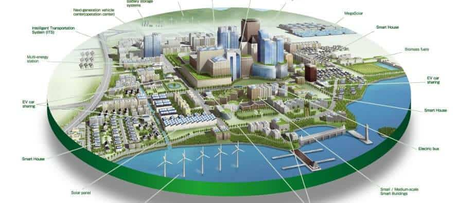
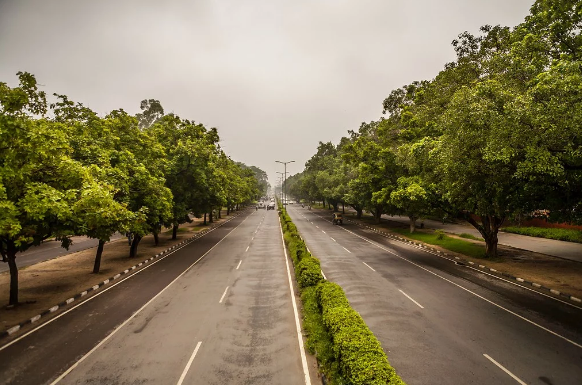

Sector-based City Design
Chandigarh is famous for its sector-based city planning, a core element of Le Corbusier’s vision. The city is divided into well-defined rectangular sectors, each designed as a self-sufficient neighborhood. Every sector includes residential areas, markets, schools, parks, and community facilities, ensuring convenience for daily life. Wide roads and green belts separate traffic and residential spaces, reducing congestion and enhancing livability. This systematic and modular design makes Chandigarh organized, easy to navigate, and a benchmark for modern urban planning in India.

Capitol Complex – UNESCO World Heritage Site
The Capitol Complex is the administrative heart of Chandigarh and a masterpiece of modern architecture designed by Le Corbusier. It houses the Secretariat, Legislative Assembly, and High Court, each reflecting bold brutalist architecture with geometric forms and open spaces. The complex also features symbolic elements such as the Open Hand Monument. In 2016, UNESCO declared the Capitol Complex a World Heritage Site, recognizing its global architectural and historical significance.

Open Hand Monument
The Open Hand Monument is one of the most iconic symbols of Chandigarh. Designed by Le Corbusier, it represents peace, unity, and the philosophy of “giving and receiving.” The giant open hand structure rotates with the wind, symbolizing openness and harmony. It reflects the democratic and progressive spirit of the city and stands as a powerful emblem of Chandigarh’s modern identity.

Green Belts & Wide Roads
Chandigarh is widely admired for its wide, straight roads and extensive green belts, which are central to its urban planning. Roads are carefully categorized to separate fast-moving traffic from local streets, improving safety and efficiency. Green belts, parks, and tree-lined avenues run between sectors and along roads, providing clean air, reducing noise pollution, and enhancing the city’s beauty. Together, these features make Chandigarh one of India’s cleanest, greenest, and most livable cities.
